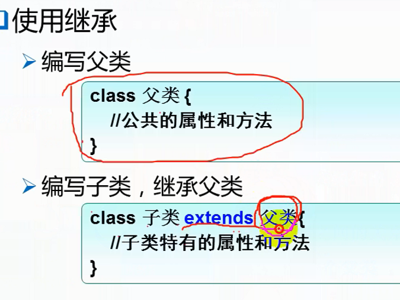

继承：
根据已有类派生出新类的技术。
什么时候用继承?
当两个类有从属关系、包含与被包含的关系、或者多个类有代码冗余时,提取出冗余代码 作为父类
类和类之间的关系有多种,不只有继承
java中是单一继承，只能有一个父类，可以有多个子类。(java只支持单继承, 不允许多继承)

继承：
子类可以继承父类中的“所有”功能，还可以添加自己独特的功能。("所有"打引号是指父类的有些功能继承了是不能使用的。继承会使子类拥有父类对象所有的属性和方法(包括私有属性和私有方法), 但是父类中的私有属性和方法子类是无法访问的, 只是拥有)
不能继承或者无法访问的情况：
1.私有权限的成员；(即被private访问修饰符修饰的成员, 继承了, 但无法访问)
2.父类和子类不在同包之中，父类中为默认访问权限的成员；(即被默认访问修饰符修饰的成员。继承了, 但无法访问)
3.构造器。(每个类的构造器只能在自己类里面实现, 不可能在别的类里实现)(没有继承???)
* 我们知道静态变量属于类级别变量，对应每个类只有一份，类的所有实例共用一份，而成员变量则分别属于每个对象；
* 在类的继承中，父类的静态变量和成员变量，子类都会继承，那么继承的原则是什么？通过测试，我们的结论是：
* 1.不仅类的对象共享类的静态变量，父类的所有子类对象也都共享父类的静态变量，有且仅有一份(子类不会复制一份父类的静态变量到自己的类里,而是和父类共用一份)，对其进行修改，会影响到所有类(包括父类及其所有子类)及对象；
* 2.子类复制父类的实例成员变量，每个子类持有一份，互不影响。实例成员的话当然是不可能和其他类共享的,毕竟就算是同一个类,不同对象的实例成员的值也是不一样的。
继承时的实际情况:
当一个子类被实例化的时候，默认会先调用父类的构造方法对父类进行初始化，即在内存中创建一个父类对象，然后再在父类对象的外部放上子类独有的属性，两者合起来成为一个子类的对象。(所以说子类中其实包含所有父类的私有成员)
虽然说子类对象内存空间包含父类的所有private修饰的变量，但是子类不能自己编写函数对private变量进行直接修改，访问。但子类能直接使用继承下来的public函数(get、set访问器)对父类的private变量进行修改(不像其他非子类, 使用时要用父类的对象调用哪些public函数)，访问。
比如经过实验, 这样是能正常输出结果的,不会报错。

子类和父类同包时,子类可以直接使用父类的被默认访问修饰符修饰的成员,不同包则不能使用。
举例:
package day1 中的父类Test2定义如下:

package day1 中的子类Child定义如下: 可以发现子类可以直接访问同包的父类中被默认访问修饰符修饰的成员name。

而在另一个包package day2中TestExtends类则不能访问package day1中的父类Test2中的默认访问修饰符修饰的成员name:

里氏替换原则：
"子类"是"父类"。 (如狗是宠物,公共汽车是汽车)

如果可以达到里氏替换原则,就可以设计成继承的关系
如果一个父类中的某个成员是大部分子类所具有的,但不是所有子类所具有的, 应该考虑把父类里的该成员提取出来设计成接口。
比如说鸟类一般有"飞"这个方法, 但不是所有的鸟类都会飞, 比如鸵鸟。这个时候"飞"这个方法就不要定义在父类里了,而是考虑
把"飞"定义在一个接口里,会飞的鸟就实现该接口,不能飞的鸟就不实现该接口。
-------------------------------------------------------------------------------------------------------------------------------------------------------------------------
派生子类(扩展子类)：也就是什么时候需要扩展出新的子类(即什么时候需要从父类继承)？
1.属性：需要新的属性。
2.方法：具有新的方法。
--------------------------------------------------------------------------------------------------------------------------------------------------------------------------
方法重写：(重载是编译期多态的体现,重写是运行期多态)

子类对父类的方法重写后,如果调用子类中方法,当然是调用子类重写后的方法,如果没有重写该方法,那么编译器就会去父类中找
该方法进行调用。编译器进行编译检查时就是优先看子类中是否有该方法,如果有,就直接使用,如果没有,则会去父类中找。

为什么要重写： (简单来说就是父类的某个功能达不到子类的要求)
1.子类的某个功能和父类不一样,子类需要修改了父类中的功能,；
2.子类的某个功能比父类中的更多样, 子类扩展了父类中的功能。
扩展父类中的功能举例:
父类: 手机{
来电显示（）{
电话号码;
}
}
子类: 智能手机{
来电显示（）{
电话号码;
联系人姓名;
电话号码归属地;
对方的照片;
}
}
此时需要重写来电显示()方法
重写的要求:
要在子类中进行重写；
必须要是实例方法；(静态方法不能重写)
方法名要相同；
参数列表要相同；(父类 擦除后 与子类相同也可)
返回值类型要相同；(若返回值类型为引用类型,则子类的返回值类型是父类的子类型也可)
子类的访问权限不能比父类更严格（低）； (注意:父类的private方法是不能被子类重写的)
对于异常处理：子类的异常范围不能比父类异常的范围更大。
对于" 参数列表相同；(父类 擦除后 与子类相同也可)"这句话的解释:
如下图中定义的父类和子类中定义的方法f(), 两个的参数列表的类型其实并不一样,父类中的是ArrayList的泛型的
变量list,而子类中只是ArrayList类型的一个变量list。泛型是为了方便编译器进行类型检查的,父类中那样写表示要求
往里面添加的数据都是String类型的。但在编译生成的字节码文件中,是没有任何泛型信息的,泛型信息会被擦除掉,擦
除掉后,父类和子类的字节码文件中的参数类型就是一样的了。所以下面这种重写f()方法的方式是重写规则所允许的。

对于" 返回值类型相同；(若返回值类型为引用类型,则子类的返回值类型是父类的子类型也可)"这句话的解释:
下图中f()方法中,就是子类的返回值类型是父类返回值类型的子类型:

对于" 返子类的访问权限不能比父类更严格（低）"这句话的解释:
也就是说父类如果是protected的,子类就不能是默认的或者private的,可以是public的或者protected的
如下图中就是正确的访问权限的重写方式:

对于" (注意:父类的private方法是不能被子类重写的)"这句话的解释:
看下面的例子,其实也很好理解,因为被private修饰的成员只对本类可见, 而子类必然是和父类不同类的, 所以父类的
private成员对子类不可见也可以理解,虽然子类自身拥有这些成员,但不能直接访问,只能通过其他非private方法调
用到他们(不管是私有方法还是私有属性)才能访问,自然也就不能直接重写私有方法啦,否则编译会报编译错误(但是若
删除@Override关键字, 则可以编译通过,但这个时候就不是重写了(虽然重写不带@Override关键字,也
可以实现重写,只要访问修饰符是子类可以重写的方法, 那编译器自然会把该方法当成父类的重写,带上@Override只是
为了编译检查重写格式是否正确),这个时候Father的show方法只有在Father的类内才有用(在其他类中
Father对象.show()方法肯定是会编译错误的),而删除@Override关键字后Child类的show方法则在别的类也可以用)

-------------------------------------------------------------------------------------------------------------------------------------------------------------------------
super:
调用父类成员。
1.父类和子类有同名的成员时；
2.调用父类构造：
super( );
必须要写在子类构造中才能使用，且必须在第一行代码处。
举例:

-------------------------------------------------------------------------------------------------------------------------------------------------------------------------
this和super的异同
super(参数)：可以调用直接父类中的某一个构造函数（应该放在当前构造函数中的第一条语句）。
this(参数)：可以调用本类中另一种形式的构造函数（应该放在当前构造函数中的第一条语句）。
this 是自身的一个对象，代表对象本身，可以理解为：指向对象本身的一个指针。
与 this 类似，super 相当于是指向当前对象的父类，这样就可以用 super.xxx 来引用父类的成员。
super: 它引用当前对象的直接父类中的成员（用来访问直接父类中被隐藏的父类中成员数据或函数(当然也跟其他调用情形一样,受到和其他调用情形
一样的访问修饰符的限制,比如说父类中的private成员自然也是不能直接访问的)，也用于区分基类与派生类中的同名成员, 如用super来表明
哪个是父类的成员：super.变量名 super.成员函数据名（实参）。this：它代表当前对象名（在程序中易产生二义性之处，应使用 this 来指明当前对
象；如果函数的形参与类中的成员同名，这时需用 this 来指明成员变量名）
super() 和 this() 类似,区别是，super() 从子类中调用父类的构造方法，this() 在同一类内调用其它方法。 super() 和 this() 均需放在构造方法内第一行。
this 和 super 不能同时出现在一个构造函数里面，因为this必然会调用其它的构造函数，其它的构造函数必然也会有 super 语句的存在(如果这个构造函数没有显示的使用super调用父类构造, 也会有一个隐含的super语句调用父类构造)，所以在同一个构造函数里面有多个super的话，就造成了冲突，编译也不会通过。
this() 和 super() 都指的是对象，所以，均不可以在 static 环境中使用。包括：static 变量,static 方法，static 语句块。
从本质上讲，this 是一个指向本对象的指针, 然而 super 是一个 Java 关键字。
子类对象：
创建子类对象时,因为 super(参数); (参数可有可无) 这条语句必然是在构造器的最前面的,所以必然是先调用父类构造,然后逐级父类往上调用,每个父类也都是先执行构造器的第一条super(参数);(参数可有可无)语句, 直到调用到Object类的构造为止，等Object类整个构造执行完毕,生成对象,才是一级一级往下执行完每个父类的整个构造,最后才是调用子类构造,创建对象。
子类构造器中，如果哪个构造器里没有显式的写 super(参数); 或 this(参数); ("参数"是可有可无的)，那么系统会隐式的自动
分配一个 super( ); 调用父类的无参构造。(注意是每个子类的构造器中(不管有参还是无参构造器)都会在这种情况下分配一
个父类的无参构造。如果父类没有无参构造,则此时编译器会报错,会要求子类的每个构造器都要显式的用super(参数);(注意这里的"参数"就必须包含内
容了)调用一个父类的构造器,当然也可以用this(参数);来在某个构造器中复用子类自己的其他构造器中的super(参数);)
所以为了方便,在父类中定义构造器时一般都会显式的定义一个无参构造,即使这个无参构造里面没有一行代码
目的是为了让继承他的不同的子类都能顺利的创建对象(因为有的子类可能并不需要带参构造来初始化某些成员)
父类中如果只定义了带参构造器，那么子类构造器中必须显示调用父类带参构造器。
继承传递性：
子类可以继承直接父类和间接父类中的功能。
super调用的是直接父类的。
---------------------------------------------------------------------------------------------------------------------------------------------------------------------------
Object类 : Object类是所有类的超类(父类),Object类是类层次结构的根(也就相当于所有类的最顶层,就像树的根节点)
下图是它所有的方法: 所以所有的的类(引用类型的变量)都具有以下的方法:

clone() 创建并返回当前对象的副本
equals( Object object)判断是否和输入的参数为同一个对象（要地址相同才算相同。但有些类重写了该方法,比如String重
写后只要所有字符一一对应相同即可返回true,不需要两字符串为同一地址）用Object类是为了任何类都可
以传进来比较,而不是只限制一种类型,传其他类型就报错。
重写equals()方法时, 有时候需要把Object类型的对象强转为子类类型的对象。(类型转换的具体原理见下面)
举例如下: (Object类里是没有age属性的,所以obj.age肯定是会报编译错误的,但下面这种写法,如果真的传一个Object类型给下图中的equals()方法, 强转类型时也会报错)

进行转化的对象转换前后的类型必须要有继承关系。在对象的类型转换中子类对象可以自动转换为父类对象(其实转换后底层实际上还是子类的对象(但表面上是父类的对象,比如说如果想用"对象.成员"的方法直接调用父类不存在而子类存在的成员的话,自然是会编译错误的。并且用"对象.成员"的方法调用的成员,如果在父类中是private的话(即使该成员在子类中有非private实现, 见例2)也是不能调用的,肯定会编译错误,所以说表面上是父类对象是因为编译器会认为该对象是父类的对象),因为引用类型变量传的是地址,自动类型转换是不可能改变变量地址的,所以传过去的对象还是原来的样子,只不过由于子类必然具有父类的所有成员(只是能不能直接访问的问题),所以转换并没有任何障碍。 但是父类要想转化为子类对象就必须强制转化(当然父类强制转换为子类也一样,表面上就是子类的对象了,并且注意: 强转能成功运行的话也说明该对象底层就是该子类的对象(或者底层是该子类的子类的对象也有可能),如果不是的话强转在运行时就会报错。也就是说强制转换的父类对象的底层必须是子类的对象或者是继承了子类的类的对象。在继承中子类对象调用父类属性和方法 所以子类对象可以自由转换父类对象, 但是父类要想转换为子类就必须强转(而且该对象不能真的是父类对象(而要是披着父类对象外衣的子类对象),否则会强转失败)

再看下面这个例子: "//"后面的是输出结果
红框处之所以结果显示调用的是父类的成员,是因为转换之后,编译器就认为father是个父类的对象,完全不会管底层是什么的对象,
所以它调用的必然是父类已有的成员,就算子类有同名成员也是一样(因为子类必然是包含父类的所有成员的,即使有些对子类来说是不可见的, 子类和父类若有同名成员,那么他们相同成员的hash编码肯定是不一样的(也可能父类中的属性根本不会出现在子类的文件中,执行时同时调用两个字节码文件))。而且如果是子类有而父类不存在的成员,也不可能被调用,因为编译器认为它是父类对象的话,调用子类独有而父类不存在的成员的话,首先编译就不可能通过

接下来考虑父类的show方法不是private的情况,也就是子类正常重写父类show方法时。同时也让Father2类的name也变成了非private,结果只有红框中的结果变了,如下图所示("//"后面的即是输出结果)。
为什么红框的结果会变?这正是多态的体现。红框中的代码调用的是子类重写过的方法,而不是父类的方法, 也正如我们前面说的: 自动转换后,表面上是父类的对象,而底层却是子类的对象。java中关于继承的方法调用的机制是: 如果父类的对象是由子类对象转换过来的, 那么当该"表面是父类对象"的对象调用某方法时,如果该方法被重写过,则该对象原来的父类的方法会直接被覆盖掉, 不复存在, 该对象不管如何调用都是调用的是子类重写过后的方法。也就是说,只要他实际上(底层)是一个子类的对象,并且方法被重写过, 那么父类的方法就被覆盖了, 该对象里就只有子类的方法了。
* 子类继承父类时,只有实例方法如果重写的话,会覆盖掉父类的方法。其他的成员如果有同名
* 的都不会覆盖父类的成员,底层是子类对象的话转换为父类对象后,都还可以调用到。
* 而内部类在继承后如果定义同名内部类,也不会覆盖父类中的 内部类。因为父类和子类的
* 内部类的字节码文件的文件名实际上是不一样的。

那为什么上图中蓝框的结果没有变呢? 因为只有方法才存在重写,属性是不会重写的,即使Child2类继承了name属性, 也依旧可以再在子类中定义一个新的name属性。可以存在两个属性同名,只是他们的hash值不一样(也可能父类中的属性根本不会出现在子类的文件中,子类在被使用时同时调用两个字节码文件)。但是在Child2类里,定义新的属性和方法要使用到name时,就只能使用新定义的name了(当然也可以使用super.name来调用父类的name,直接写name的话调用的就是Child2类的)。但是原来的继承的来自父类的方法或其他属性中,如果使用到了name属性,那么,在该方法中,使用的还是父类中的name。这有点像局部变量和全局变量, 在子类中新定义的同名属性就像是局部变量,只能在子类中自己使用,出了子类,就无效了,出了子类,使用的就是 像全局变量一样的 父类中的同名属性。下面是举例:

所以以后看到参数是Object类型或者返回值是Object类型的,就意味着参数(或返回值)是什么引用类型的都可以,都支持、都
能接收或返回。非常自由。因为Object类是所有类的超类(或者说父类、或者说基类)
getClass() 方法返回的是每个类加载时都会生成的那个对应的对象,也就是对象模板(注意和那种实例化出来的对象(实例对象)相区别)
如下图中,绿框中的就是每个类加载时都会生成的那个对应的对象

举个例子: 下面是重写的equals方法,这个方法只有在两个对象都是同一个类产生的时,才会在绿框处开始比较age。

getClass() 返回的是每个类加载时都会生成的那个对应的对象,也就是对象模板(注意和那种实例化出来的对象(实例对象)相区别)
所以如果两个对象的对象模板是一样的,那么才有可比性。意思是说两个不同的对象必须是由同一个类产生的(即使是有继承关系的类也不行,必须是同一个,当然继承关系中,只要保证自动或强制转换后底层是同一个对象即可,因为底层相同的话,在转换前,他们肯定是同一个类new出来的), getClass()方法才会返回同一个值,红框所在的if条件才会为false,才会跳过if语句去执行下面的语句。绿框这里是Test2类中的两个对象的age属性进行比较,如果传过来的是一个String类型的对象,那么由于子类自动转换为父类,这种传参是没有问题的, 但是如果没有红框处的这个if语句,那么到了上图中蓝框代码处就会执行报错,因为String类和Test2类根本没有继承关系,所以肯定会类型强转失败。
实际上即使是Object类的对象(或是其他的Test2的父类)传进来,执行到蓝框的代码也会报错。因为父类Object的对象可以强制转换为子类Test2的对象,究其原因是因为传参过来的这个对象就是类Test2的对象,所以强转在蓝框代码执行时不会报错,否则如果传过来的真是直接的Object类的对象的话,如果没有红框的if语句,那么执行到蓝框就会报错,虽然编译检查默认父类是可以强转为子类的,不会报错,但是如果真是父类,毕竟缺少了子类的很多属性和方法,在执行时就会认为这种强转方法是错误的,就会报错。举例如下。(我还测试了在父类和子类都是我自定义的情况下,也是这样,并不是因为Object类特殊而造成的)


错误提示如下: 显示第37行强转失败

再比如下面的例子: (报错提示和上图一模一样)

finalize() 当垃圾收集确定没有任何对某对象的引用时，由垃圾收集器在对象上调用该方法。finalize() 方法重写的话里一
般写关于清理资源或者让当前对象再次获得引用的代码。
finalize方法可以采取任何操作，包括让这个对象再次对其他线程可用; 然而，finalize的通常用途是在不可撤销地丢弃
对象之前执行清理操作。例如，表示输入/输出连接的对象的finalize方法可能会执行显式的I/O事务，在永久丢弃对象
之前中断连接。类Object的finalize方法不执行任何特殊操作;它只是正常返回。Object的子类可以重写此定义。
一个对象如果失去了所有引用一段时间的话就会被垃圾回收器回收,被释放掉,垃圾回收器的回收时期是在jvm内存快满
了,急需要一些空间为了存放新的对象做准备。
强制垃圾回收能做到的是通知,通知垃圾回收器过来回收,但垃圾回收器可能会来可能不来,来不来是控制不了的,强制垃圾
回收只是通知一下垃圾回收器。
在垃圾回收之前会调用finalize(),在垃圾回收之前,某个类的某个对象被回收释放掉之前会调用finalize()。
举例如下: System类表示java程序正在运行的平台。

toString( )
展示对象的字符串描述信息 (展现形式是: 包名.对象名@对象地址的hash值 。) 经常会通过重写来展现自己需要的对象信息
使用 println( ) 或 print( ) 输出对象名时，会隐式自动调用toString( )方法。
比如下图中的两个输出结果是一样的: 也就是说隐式调用的代码实际上执行的是显示调用的代码

hashCode()
Object类的hashCode()方法是通过hash算法来返回对象地址的hash值
hash值是对象的唯一标识
hash值是通过hash算法把一个很长或很大的文件算出来一个固定的数值,这个值就是hash值
可以用hash算法来加密各种信息,用一串数字来表示信息。
hash值也可能出现hash冲突(碰撞)
引用和对象的区别:
编译时检查的是赋值运算符左边的部分,运行时执行的是赋值运算符右边的部分,生成对象、变量和给对象、变量等分配空间
赋值运算符左边和右边的类型不一定相同。
如 Object obj = new Student();
左边的obj是Object类型的, 而右边是day10.Student类型的
赋值运算符左边是编译期的类型,赋值运算符右边是运行期的类型,是真正产生的对象的类型。
赋值运算符左边是引用名称的类型,右边是对象的类型。他俩可以不一样。
注意引用和对象的区别:
引用说到底里面就是个地址值(存储在栈里,作用跟c语言里的指针一模一样), 而对象则是真正的存储在堆里真正的对象。
对象只会在新建对象时出现在代码语句里,其他时候都不会出现。如Object obj = new Student(); 赋值运算符右边的就是一个真正的对象(当然除了new也还有其他创建对象的方法), 而赋值运算符左边的则是引用,只是个地址。如果再来一句代码, Object obj1 = obj; 则此时赋值运算符两边都是引用,只是将obj里面的地址赋给了另一个变量obj1, 只是一个地址在传来传去, 已经跟具体的对象无关了。
比如LinkedList类里在双链表的末尾插入元素的操作如下:
last和first就是记录的就是双链表的首节点和尾节点。


--------------------------------------------------------------------------------------------------------------------------------------------------------------------------
重写时写代码的小技巧:
(1)如果记不住父类的方法,方法定义的上一行加上一个java自带的注解 @Override ,编译器就会进行编译检查,如果你写的
方法的定义和父类中的不一样,不符合重写的规则,就会报编译错误。

(2)利用eclipse自带的功能自动生成重写代码: (只能自动重写了Object类里的hashCode()方法和equals()方法)
鼠标右键单击后找到如下提示即可生成:

自动重写生成的代码如下: (这里是自动重写时选择age属性进行自动重写)

-------------------------------------------------------------------------------------------------------------------------------------------------------------------------
final 修饰符 表示终态
可修饰：
变量：被修饰后该变量则表示常量（值不能改） (java中没有const关键字来表示常量)
方法：修饰后此方法不能被重写
类： 修饰后该类不能被继承
final修饰符的适用场景: (在类、方法、变量中什么情况下使用final修饰符)
final修饰类：
1.该类是最终版本的类，不需要扩展了；
2.为了类的安全；(继承会破坏封装, 因为子类可以修改父类的功能(重写))
3.某个类不是为了继承使用的，方法间有复杂的调用关系。
final修饰方法：
1.所有的子类调用同一个版本的方法；(该方法不允许子类重写,所有子类的该方法的功能一致)
2.不允许子类更改、重写。
final修饰变量：
值一旦确定不允许更改,要作为常量使用。
只要是常量,则常量的命名规范就为：单词的每个字母都大写，多个单词组成时用"_"连接)
常量有三种类型：静态常量(被static修饰的常量)、成员常量和局部常量(局部常量就是定义在成员方法里的常量)。

看下面的java源码中常量的常见形式: (一般都是以静态常量居多)


特殊：
final修饰变量时,如果该变量是一个对象的引用, 则引用的对象不能改变，但是可以改变对象的属性值。 （也就是引用的地址无法改变）
举例:
看下图,不能将demo1指向别的对象:

但可以改变其对象里的值

好处：
1.提高安全性；因为不能更改；
2.提高可维护性；(更改常量时只需改一个地方就更改完毕)
3.提高代码可读性。
-------------------------------------------------------------------------------------------------------------------------------------------------------------------------
final 和 finalize( ) 和 finally
final是修饰符,finalize()是方法,用于垃圾回收前进行资源释放或者恢复引用的。
----------------------------------------------------------------------------------------
常量:
1.用final关键字修饰的常量，可以在其定义时就初始化，也可以到类的构造方法里面再对它进行初始化：例如
class A{
final int i;//当然也final int i=10;
public A(){
i=10;
}
}
2.用static和final关键字同时修饰的常量就必须得再定义时初始化，例如：
class A{
static final int i=10;
}
其实可以从关键字的含义来理解是否得一定义就初始化：常量都是用final来修饰的，所以如果不是static的常量, 只要在包含它的类实例化对象的时候保证final已经初始化就行了，那就什么都不影响。但是如果常量前面加了static, 表明类装载时这个常量必须是有个状态的（被赋予了值，初始化了），因为静态的属性不需要实例化对象也能直接通过类调用, 所以此时就必须定义时初始化,指明该常量到底代表那个值或引用, 因为常量在后面的使用中值或引用是不能更改的(如果只是普通的static变量, 不是final的, 那么可以在定义的时候不初始化,这样会赋个默认值, 反正想改的话, 后面也还能再改)。
———————————————————————手写与上传资料分割线——————————————————————